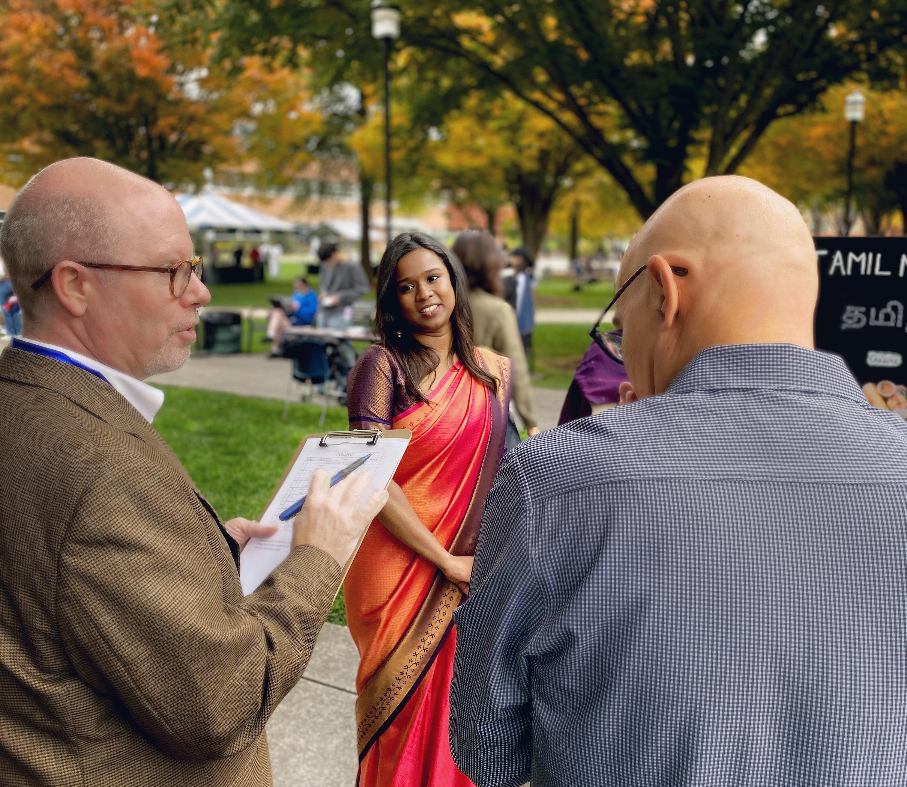

VOLUNTEERING EXPERIENCES
Driven by a deep commitment to social good, I dedicate my time to volunteer work that supports and uplifts others. I believe in the power of teamwork, compassion, and leadership to bring about meaningful change. Through every opportunity to serve, I aim to make a positive impact and help build stronger, more inclusive communities. Small efforts can lead to big differences—and I’m grateful to be part of that journey.
Mayor Outreach Team Lead
As a Team Lead for the Mayor Outreach Team at Bright Mind Enrichment and Schooling, I lead a group of volunteers focused on building strategic connections with local government officials. My role involves planning outreach initiatives, organizing meetings, and driving engagement that supports mental wellness and educational enrichment programs. I manage communications across the team, delegate tasks effectively, and ensure our outreach efforts align with the organization’s mission. This role has enhanced my leadership, public speaking, and strategic planning skills. Recently, I spearheaded a campaign that helped establish new connections with city representatives, broadening the organization’s visibility and potential for future collaborations.
Global Ambassador
During my time at Pennsylvania State University, I served as a Global Ambassador, representing the international student community and fostering cross-cultural exchange on campus. I organized and led over 15 cultural events and orientation sessions to support international students in adjusting to life at Penn State. My efforts helped build a more inclusive campus environment and provided vital peer-to-peer support for students navigating academic and cultural transitions.
Joint Secretary
 As the Joint Secretary of the Technical Association at Anna University, I was responsible for planning and executing more than 10 technical events, including symposiums, coding challenges, and guest lectures. I collaborated closely with faculty members and student leaders to manage event logistics, budgets, and speaker coordination. This role sharpened my organizational, leadership, and communication skills while nurturing a culture of innovation and technical learning within the student community.
As the Joint Secretary of the Technical Association at Anna University, I was responsible for planning and executing more than 10 technical events, including symposiums, coding challenges, and guest lectures. I collaborated closely with faculty members and student leaders to manage event logistics, budgets, and speaker coordination. This role sharpened my organizational, leadership, and communication skills while nurturing a culture of innovation and technical learning within the student community.